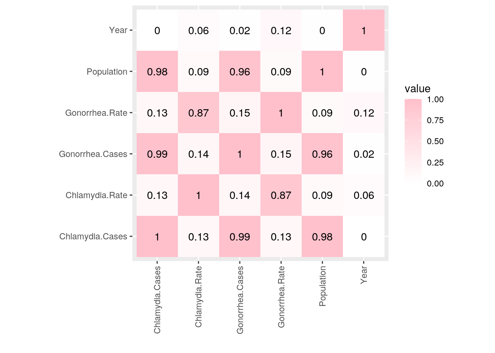
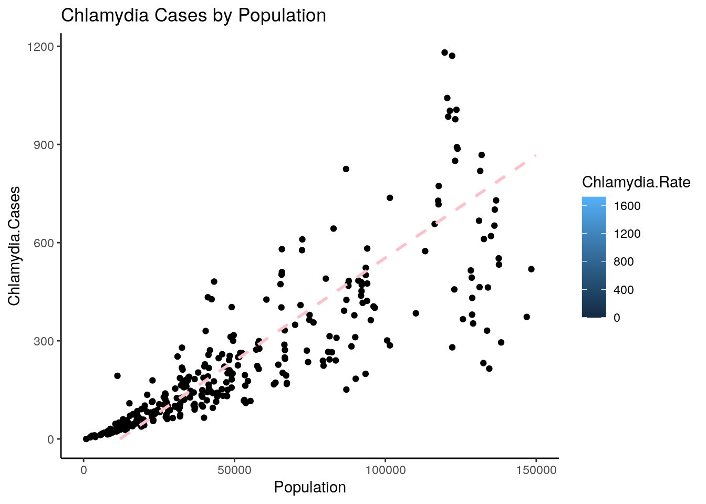
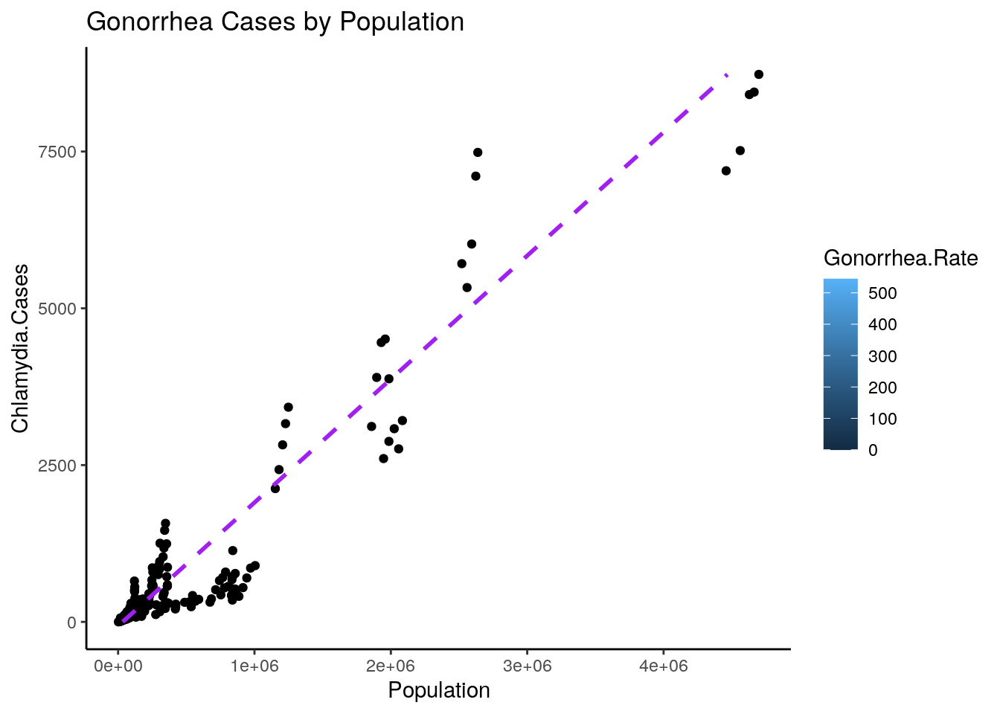

The datasets that are used in this project compare Gonorrhea and Chlamydia rates in Texas counties from 2014-2018. These datasets also include the population of each county and STD rates are a composition of all races and age groups. I accessed this data from the Texas Department of State Health Services (dshs.texas.gov). I chose this data because I am interested in infectious diseases and STDs are some of the most widely studied. Through this project, I aim to see if a higher population size amounts to higher rates of Chlamydia and Gonorrhea.
Used in heatmap!
library(dplyr)
library(readr)
chlamydia <- read_csv("C2.csv")
chlamydia.renamed <- chlamydia %>% rename(Chlamydia.Cases = Cases,
Chlamydia.Rate = Rate)
library(tidyverse)
chlamydia.comp <- na.omit(chlamydia.renamed)
Gonorrhea <- read_csv("G2.csv")
Gonorrhea.renamed <- Gonorrhea %>% rename(Gonorrhea.Cases = Cases,
Gonorrhea.Rate = Rate)
Gonorrhea.comp <- na.omit(Gonorrhea.renamed)
STD <- left_join(chlamydia.comp, Gonorrhea.comp, by = "Area Year")
STD.clean <- na.omit(STD)
STD.comp <- STD.clean[-c(7, 8)]
STDs <- STD.comp %>% rename(Area = Area.x, Year = Year.x)Counties that did not have recorded Gonorrhea and Chlamydia cases were omitted before joining. The left join function was used to join the datasets by “area year” so that each county had both Chlamydia and Gonorrhea data. After joining the data, I omitted all counties that did not have STD data. This drop could cause summarizing data to not take into account counties without STD rates. I also renamed the area and year columns and deleted the extra area and year columns.
# Gives Chlamydia and Gonorrhea percent data
Chlam_PCT <- STDs %>% mutate(Chlam_PCT = Chlamydia.Cases/Population *
100)
STD_PCT <- Chlam_PCT %>% mutate(Gon_PCT = Gonorrhea.Cases/Population *
100)
Tot_STD <- STD_PCT %>% mutate(Tot_STD = Chlamydia.Cases + Gonorrhea.Cases)
Tot_STD <- Tot_STD %>% mutate(Tot_STD.pct = Tot_STD/Population *
100)
Tot_STD %>% filter(Population > 50000) %>% group_by(Tot_STD,
Tot_STD.pct) %>% arrange(-Year)## # A tibble: 323 x 12
## # Groups: Tot_STD, Tot_STD.pct [323]
## `Area Year` Area Year Population Chlamydia.Cases Chlamydia.Rate
## <chr> <chr> <dbl> <dbl> <dbl> <dbl>
## 1 Anderson20… Ande… 2018 58057 247 425.
## 2 Angelina20… Ange… 2018 87092 425 488
## 3 Atascosa20… Atas… 2018 50310 426 847.
## 4 Bastrop2018 Bast… 2018 86976 825 948.
## 5 Bell2018 Bell 2018 355642 3346 941.
## 6 Bexar2018 Bexar 2018 1986049 10539 531.
## 7 Bowie2018 Bowie 2018 94324 574 608.
## 8 Brazoria20… Braz… 2018 370200 1433 387.
## 9 Brazos2018 Braz… 2018 226758 1462 645.
## 10 Cameron2018 Came… 2018 423908 2074 489.
## # … with 313 more rows, and 6 more variables: Gonorrhea.Cases <dbl>,
## # Gonorrhea.Rate <dbl>, Chlam_PCT <dbl>, Gon_PCT <dbl>, Tot_STD <dbl>,
## # Tot_STD.pct <dbl>Mean.tot <- Tot_STD %>% group_by(Population > 50000) %>% summarize(mean.tot = mean(Tot_STD.pct,
na.rm = T))
# If the population is greater than 50,000, the gonorrhea and
# chlamydia mean percentage is 0.588% and when the population
# is less than 50,000 it is 0.49%.
# Group by Poplation and summary data for gonorrhea cases in
# population
Gon_sum <- Tot_STD %>% group_by(Population > 50000) %>% summarize(gon_mean = mean(Gonorrhea.Cases,
na.rm = T), gon_sd = sd(Gonorrhea.Cases, na.rm = T))
# Group by Population and summary data for chlamydia rate in
# population
Chlam_sum <- Tot_STD %>% group_by(Population > 50000) %>% summarize(chlam_mean = mean(Chlamydia.Cases,
na.rm = T), chlam_sd = sd(Chlamydia.Cases, na.rm = T))
# Summary of Chlamydia rate
Chlam_rate <- Tot_STD %>% group_by(Population > 50000) %>% summarize(chlam_max = max(Chlamydia.Rate,
na.rm = T), chlam_min = min(Chlamydia.Rate, na.rm = T), chlam_median = median(Chlamydia.Rate,
na.rm = T), cham_mean = mean(Chlamydia.Rate, na.rm = T),
cham_sd = sd(Chlamydia.Rate, na.rm = T))
# Summary of Gonorrhea rate
Gon_rate <- Tot_STD %>% group_by(Population > 50000) %>% summarize(Gon_max = max(Gonorrhea.Rate,
na.rm = T), Gon_min = min(Gonorrhea.Rate, na.rm = T), Gon_median = median(Gonorrhea.Rate,
na.rm = T), Gon_mean = mean(Gonorrhea.Rate, na.rm = T), Gon_sd = sd(Gonorrhea.Rate,
na.rm = T))
STDs %>% summarize(STDs, mean(Chlamydia.Cases))## # A tibble: 975 x 9
## `Area Year` Area Year Population Chlamydia.Cases Chlamydia.Rate
## <chr> <chr> <dbl> <dbl> <dbl> <dbl>
## 1 Anderson20… Ande… 2018 58057 247 425.
## 2 Anderson20… Ande… 2016 57550 223 388.
## 3 Anderson20… Ande… 2017 58212 214 368.
## 4 Anderson20… Ande… 2014 57849 214 370.
## 5 Anderson20… Ande… 2015 57646 195 338.
## 6 Andrews2018 Andr… 2018 18128 74 408.
## 7 Andrews2015 Andr… 2015 18083 67 370.
## 8 Andrews2014 Andr… 2014 17445 63 361.
## 9 Andrews2017 Andr… 2017 17631 62 352.
## 10 Andrews2016 Andr… 2016 17805 51 286.
## # … with 965 more rows, and 3 more variables: Gonorrhea.Cases <dbl>,
## # Gonorrhea.Rate <dbl>, `mean(Chlamydia.Cases)` <dbl>STDs %>% summarize_all(n_distinct)## # A tibble: 1 x 8
## `Area Year` Area Year Population Chlamydia.Cases Chlamydia.Rate
## <int> <int> <int> <int> <int> <int>
## 1 975 238 5 966 450 875
## # … with 2 more variables: Gonorrhea.Cases <int>, Gonorrhea.Rate <int>STDs %>% group_by(Area) %>% summarize(max_Chlamydia.Cases = max(Chlamydia.Cases)) %>%
arrange(-max_Chlamydia.Cases)## # A tibble: 238 x 2
## Area max_Chlamydia.Cases
## <chr> <dbl>
## 1 Harris 27415
## 2 Dallas 19084
## 3 Bexar 13600
## 4 Tarrant 9571
## 5 Travis 9033
## 6 El Paso 5699
## 7 Bell 4034
## 8 Hidalgo 3806
## 9 Fort Bend 3221
## 10 Collin 2919
## # … with 228 more rowsSTDs %>% group_by(Area) %>% summarize(max_Gonorrhea.Cases = max(Gonorrhea.Cases)) %>%
arrange(-max_Gonorrhea.Cases)## # A tibble: 238 x 2
## Area max_Gonorrhea.Cases
## <chr> <dbl>
## 1 Harris 8730
## 2 Dallas 7486
## 3 Bexar 4510
## 4 Travis 3423
## 5 Tarrant 3210
## 6 Bell 1571
## 7 Lubbock 1254
## 8 El Paso 1137
## 9 Collin 897
## 10 Nueces 871
## # … with 228 more rowsHarris county had the most gonorrhea and chlamydia cases of all the counties, which is not surprising because it is the largest county in Texas and the county that emcompasses Houston. If the population is greater than 50,000, the gonorrhea and chlamydia mean percentage is 0.588% and when the population is less than 50,000 it is 0.49%. This statistic was found by creating a new variable that added all the cases of gonorrhea and chlamydia together and dividing by the population. Individually, the gonorrhea rate for a population greater than 50,000 has a max of 544.1 per 100,000 individual, and mean of 133.11 with standard deviation of 90.17. For a population of less than 50,000, the max gonorrhea rate is 2286.0 per 100,000 individuals, and the mean is 105.39 with a standard deviation of 143.72. This is interesting because while the max of the population less than 50,000 is higher than that of a population larger than 50,000, the mean for the population greater than 50,000 was higher.
# Heatmap
STDs %>% select_if(is.numeric) %>% cor(use = "everything") %>%
as.data.frame() %>% rownames_to_column() %>% pivot_longer(-1) %>%
ggplot(aes(rowname, name, fill = value)) + geom_tile() +
geom_text(aes(label = round(value, 2))) + xlab("") + ylab("") +
coord_fixed() + theme(axis.text.x = element_text(angle = 90,
vjust = 0.5, hjust = 1)) + scale_fill_gradient2(low = "Purple",
high = "Pink") The graph above shows that there is a correlation between Gonorrhea rate and Chlamydia rate within a population. This is shown by an r-value of 0.87. There is also a strong correlation between how many STD cases there are and the population. This is shown by a r-vale of 0.98 for Chlamydia cases and population and 0.96 for Gonorrhea cases and the population. There is reason to believe that as the population rises, so will the STD cases.
ggplot(STDs, aes(x = Chlamydia.Cases, y = Population, fill=Chlamydia.Rate,stat="summary"))+ #I wasn't sure how to change the scale for the fill
geom_point(stat="summary", position="dodge")+
geom_smooth(method=lm, se=FALSE, linetype="dashed",
color="pink")+
coord_flip()+theme_classic()+labs(x="Chlamydia.Cases",y="Population")+ggtitle("Chlamydia Cases by Population") +scale_y_continuous(lim=c(0,150000)) This plot shows Chlamydia cases plotted by population. It shows that as the population goes up, so does the number of chlamydia cases. It also shows that while the cases go up, the Chlamydia rate (which describes how many cases there should be for 100,000 for a specific population) stays relatively the same. This may indicate there is not too much of a difference between areas if they were all the same population. This plot is also set to scale to be the populations at or below the mean.
ggplot(STDs, aes(x = Gonorrhea.Cases, y = Population, fill=Gonorrhea.Rate,stat="summary"))+ #I wasn't sure how to change the scale for the fill
geom_point(stat="summary", position="dodge")+
geom_smooth(method=lm, se=FALSE, linetype="dashed",
color="purple")+
coord_flip()+theme_classic()+labs(x="Chlamydia.Cases",y="Population")+ggtitle("Gonorrhea Cases by Population")+scale_y_continuous() This plot shows Gonorrhea cases plotted by population. Similar to the plot depicting Chlamydia cases,it also shows that as the population goes up, so does the number of Gonorrhea cases. It also shows that while the cases go up, the rate stays relatively the same. This may indicate there is not too much of a difference between areas if they were all the same population.
Either k-means/PAM clustering or PCA (inclusive “or”) should be performed on at least three of your variables (3 is just the minimum: using more/all of them will make this much more interesting!)
## paste this chunk into the ```{r setup} chunk at the top of
## your project 1 .Rmd file
knitr::opts_chunk$set(echo = TRUE, eval = TRUE, fig.align = "center",
warning = F, message = F, tidy = TRUE, tidy.opts = list(width.cutoff = 60),
R.options = list(max.print = 100))data(package = .packages(all.available = TRUE))…